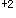

患者31岁。孕3产0，孕42周，诊断为“过期妊娠”。入院后给予缩宫素引产，宫缩过强，持续56s，间隔60s，胎心监护提示“胎儿窘迫”。 应采取的首要急救护理措施是
显示答案
参考答案：A
题目解析：应该立即采取相应措施纠正胎儿缺氧,包括改变孕妇体位、吸氧、停止缩宫素使用抑制宫缩、纠正孕妇低血压等措施,并迅速查找病因,排除脐带脱垂、重度胎盘早剥、子宫破裂等,如果这些措施均不奏效,应该紧急终止妊娠。对于可疑胎儿窘迫者应该综合考虑临床情况、持续胎心监护、采取其他评估方法来判定胎儿有无缺氧,可能需要宫内复苏来改善胎儿状况。